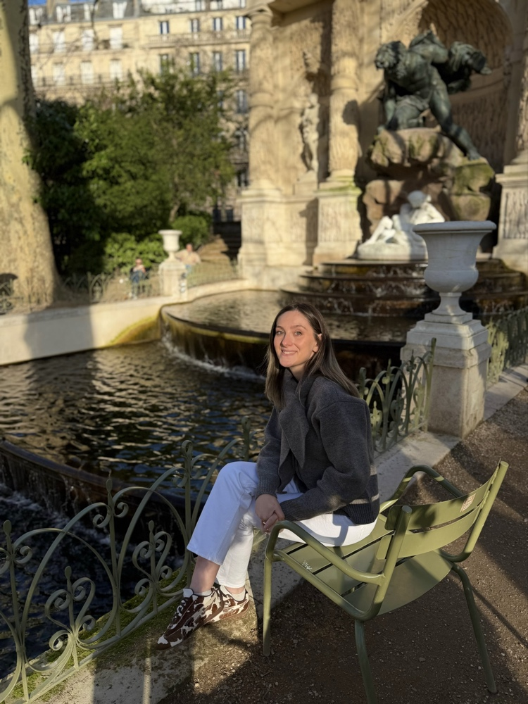

დაწყებითების მასწავლებელი
გამარჯობა, მე ვარ სალომე ცნობილაძე
ჩემ შესახებ
მე ვარ სალომე ცნობილაძე,ვცხოვრობ თბილისში. ვსწავლობ Frontend დეველოპმენტს, რადგან თანამედროვე სამყაროში საკმაოდ მოთხოვნადი პროფესიაა.
ჰობი
- ახალი ტექნოლოგიების შესწავლა
- კითხვა და თვითგანვითარება
- ცეკვა და მოგზაურობა
მიზნები
- მოკლევადიანი: წარმატებით დავასრულო HTML/CSS კურსი.
- საშუალოვადიანი: შევქმნა რამდენიმე რეალური სავარჯიშო ვებგვერდი.
- გრძელვადიანი: გავხდე პროფესიონალი Frontend დეველოპერი.
განათლება
ბაკალავრი: დაწყებითების პედაგოგი
კურსი: Skillwill - Frontend Developer-ის სტუდენტი
გამოცდილება
დაწყებითი კლასების მასწავლებელი: ვმუშაობ სკოლაში 1-4 კლასის მოსწავლეებთან და ვიყენებ ინტერაქტიულ და მეგობრულ მეთოდებს.
მენეჯერი და ადმინისტრატორი: ვმუშაობ ტანსაცმლის მაღაზიაში მენეჯერად, ვკორდინირებ გაყიდვებს და ვმართავ სოციალურ გვერდებს.
ვებ-დეველოპმენტი: ამჟამად აქტიურად ვეუფლები ვებ-დეველოპმენტს და ვქმნი ჩემს პირველ პერსონალურ პორტფოლიოს.
უნარები და მეთოდები
სწავლის მეთოდები:
- ინტერაქტიული და თამაშზე დაფუძნებული სწავლება
- ინდივიდუალური მიდგომა თითოეულ მოსწავლესთან
- კრეატიული და საინტერესო დავალებები
- მეგობრული და მხარდამჭერი გარემოს შექმნა
ზოგადი უნარები:
- მეგობრული და სამართლიანი
- პასუხისმგებლიანი და ყურადღებიანი
- ენერგიული და კომუნიკაბელური
პროექტები
- პერსონალური პორტფოლიო: ჩემი პირველი ინდივიდუალური საიტი HTML-ში.
კონტაქტი
ელფოსტა: salo.tsnobiladze@gmail.com